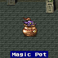

Side-Quest (4)
Odin
กลับไปยังถ้ำ Jacole ที่อยู่ใกล้ๆ กับปราสาท Bal

เข้าไปด้านในสุด Butz จะปีนขึ้นไปด้านบน
แต่เมื่อโลกทั้งสองมารวมกันแล้ว ด้านบนของถ้ำจึงกลายเป็นชั้นใต้ดินของปราสาท
Bal
ซึ่งด้านในสุดจะมี Summon Magic Odin
โดย Odin จะเตือนว่า หากต้องการสู้กับเขา เขาจะให้เวลาเพียง 1 นาทีเท่านั้น
หากเกิน 1 นาที เขาจะไม่ปราณี (หากเกิน 1 นาที จะ Game Over)
Boss : Odin
Level : 2
HP : 17,000
ในการสู้กับ Odin นั้น การโจมตีทางกายภาพถือเป็นสิ่งที่ดีเพราะเป็นการประหยัดเวลา
หากใช้เวทย์มนต์จะทำให้เสียเวลาในการร่ายและภาพอนิเมชัน
combo ที่แนะนำ ก็คือ
อาชีพ Ninja สวมใส่ Double Lancer สองข้าง (ทำให้โจมตีได้ 4 ครั้ง)
และติด Ability Berserk ทำให้โจมตีได้รุนแรงมากขึ้น (1,xxx up)
ส่วนอาชีพสายนักรบอื่นๆ เช่น Knight, Samurai
ให้ติด Ability X-Fight จะโจมตีได้ 4 ครั้งซ้อน
ยิ่งใช้กับอาวุธศักดิ์สิทธิ์ จะโจมตีได้รุนแรงยิ่งขึ้น (1,xxx up เช่นกัน)
หรือหากติด Ability X-Fight ให้กับอาชีพ Monk จะโจมตีได้มากถึง 8 ครั้งซ้อนเลยทีเดียว
เมื่อปราบได้ จะได้รับ Odin เป็น Summon
Magic
Phoenix
ขี่ Black Chocobo ไปลงยังป่ากลางทะเลทราย
ซึ่งภายในทะเลทรายจะมีศัตรูสุดโหดรออยู่ คือ Sand
Crawl
จากนั้นเดินไปทางทิศตะวันตกจะเจอหอคอย

เมื่อเข้าไปภายในหอคอย จะเป็นทางตัน แต่หากสำรวจที่ผนังจะมีทางเข้าไปได้
ทุกๆ 5 ชั้นจะเจอ Magic Pot
ซึ่งในแต่ละชั้นจะมี Item 1 อัน และเป็น ศัตรู 1 อัน
Magic Pot

Level : 91
HP : 65,255
เมื่อเจอ Magic Pot มันจะร้องขอ Elixer
วิธีปราบก็คือ กดใช้ Elixer กับมัน จนกว่ามันจะหนีไป
ซึ่งจะได้รับ ABP มากถึง 100 เลยทีเดียว
หากกลัวเปลือง Elixer ให้เปลี่ยนเป็นอาชีพ Mimic
และเมื่อให้ Elixer กับมัน 1 อัน จากนั้นก็ใช้คำสั่ง Mimic ได้เรื่อยๆ
ซึ่งคำสั่ง Mimic จะเป็นการทำซ้ำ นั่นคือเป็นการให้ Elixer กับมันเรื่อยๆ
แต่จะเสีย Elixer เพียงอันแรก อันเดียวเท่านั้น
ภายในหอคอย หากใช้คำสั่งขโมยกับศัตรู จะได้ Item ดีๆ มาใช้ ดังนี้
Chamcubia (Disablers) ขโมยได้ Wall Ring (Rare : Ribbon)
Cherie (Sherries) ขโมยได้ Red Shoes (Rare : Elf Clock)
Bella Donna (Serpentinas) ขโมยได้ Rainbow Suit (Rare : Coral Ring)
เรียนรู้ Learning Magic 1 เวทย์ คือ
Roulette จาก Bella Donna
จากนั้นเมื่อขึ้นไปถึงชั้นที่ 30 จะเจอกับ Hiryuu
ซึ่ง Hiryuu นั้นมีชีวิตอยู่ได้ไม่นาน มันใช้พลังครั้งสุดท้ายบินมายังหอคอยนี้
เพื่อที่จะตาย และกลายร่างเป็นนกฟินิกส์
จากนั้น Lenna จะนึกถึงความหลัง
แม่ของ Lenna ที่ป่วยหนัก มีทางรักษาเดียวคือ ต้องใช้ "ลิ้นมังกร"
แต่หาก Lenna ฆ่ามังกรเพื่อเอาลิ้น จะทำให้เผ่ามังกรต้องสูญพันธ์
อีกทั้งแม่ของ Lenna ก็รักมังกรตัวนั้นมาก จึงไม่อาจทำได้
จากนั้นจะได้รับ Phoenix เป็น Summon
Magic
Bahamut
ขี่ Black Chocobo ไปลงยังป่ากลางทะเลทราย
จากนั้นเดินขึ้นไปทางเหนือจะเจอภูเขา
ให้เดินขึ้นไปให้ถึงยอดเขา จะพบ Bahamut
Boss : Bahamut
Level : 99
HP : 40,000
วิธีปราบ Bahamut ได้ง่ายๆ
หากใช้อาชีพ "Summon" ให้เรียกสัตว์อสูรมาคุ้มครอง
Golem - ป้องกันการโจมตีทางกายภาพ
Carbunkle - สะท้อนเวทย์มนต์ สามารถสะท้อน Mega Flare ได้
หากใช้อาชีพ "Blue Mage"
ให้ร่ายเวทย์มนต์ดังต่อไปนี้
Big Guard - เพิ่มพลังป้องกันทั้งทางด้านกายภาพและเวทย์มนต์
Guard Off - ลดพลังป้องกัน
Mind Blast - โจมตี
Whirlwind - ฟื้นฟู HP โดยไม่สะท้อนไปหา Bahamut
L3 Flare - โจมตีโดยใช้ Flare
ส่วนตัวละครอื่นก็โจมตีได้ตามสะดวก
ซึ่งเมื่อปราบได้จะได้รับ Bahamut
เป็น Summon Magic
Information
เมื่อเรือเหาะได้รับการปรับปรุงให้สามารถดำน้ำได้
ให้ไปยังตอนใต้ของหมู่บ้าน Kanak จะเจอถ้ำอยู่แห่งหนึ่ง

ภายในจะเจอผู้เฒ่าคนหนึ่ง
เมื่อคุยกับเขา เขาจะบอกรายละเอียดต่างให้ฟัง
Gogo
ลงไปยังใต้น้ำ ตอนใต้ทะเลทราย ใกล้ๆ กับปราสาท Walz
ที่ซึ่งหอคอย Walz เคยจมลงไป
ตอนนั้นจะมี Crystal เหลืออยู่ 1 ชิ้นที่ยังไม่ได้เก็บ
แต่ภายในหอคอยนี้ มีเวลาเพียง 7 นาทีเท่านั้น มิฉะนั้น Butz จะขาดอากาศหายใจ
ภายในหอคอยจะมีหีบสมบัติอยู่หีบหนึ่ง ซึ่งภายในมีอากาศ ทำให้สามารถอยู่ได้อีก
7 นาที
ลงไปด้านล่างสุดจะเจอ Crystal ชิ้นสุดท้าย
แต่จะมี Boss เฝ้าอยู่ นั่นก็คือ
Boss : Gogo
Level : 77
HP : ????
Gogo เป็นผู้มีความสามารถในการเลียนแบบ
หากพวก Butz โจมตี Gogo ก็จะโจมตี
หากพวก Butz ใช้เวทย์มนต์ Gogo ก็จะใช้เวทย์มนต์
วิธีที่จะชนะก็คือ เลียนแบบ Gogo
นั่นคือ การอยู่เฉยๆ ...
เมื่ออยู่เฉยๆ Gogo ก็จะอยู่เฉยๆ ด้วยเช่นเดียวกัน
จนในที่สุด Gogo จะหมดความอดทน เพราะคิดว่าพวก Butz เลียนแบบมัน
คือการอยู่เฉยๆ เหมือนกัน แล้ว Gogo จะใช้เวทย์ X-Zone หนีไป
แล้วพวก Butz ก็จะได้รับอาชีพสุดท้าย
Get 1 job
Mimic